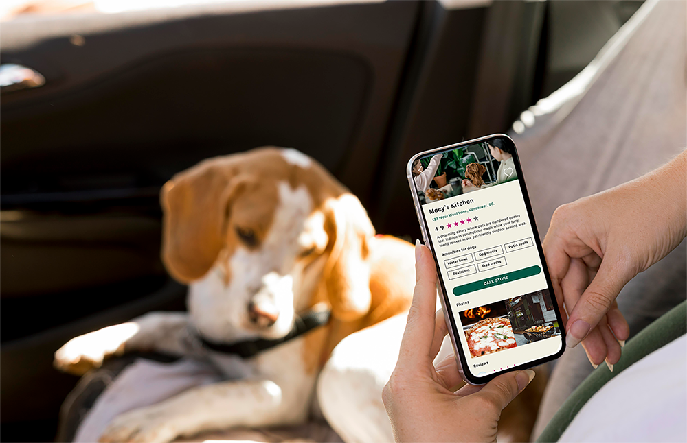
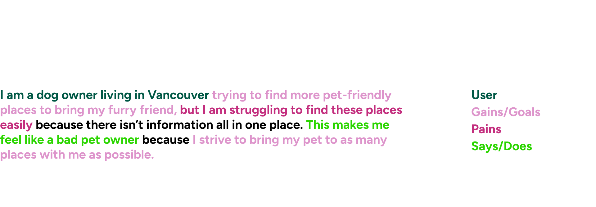
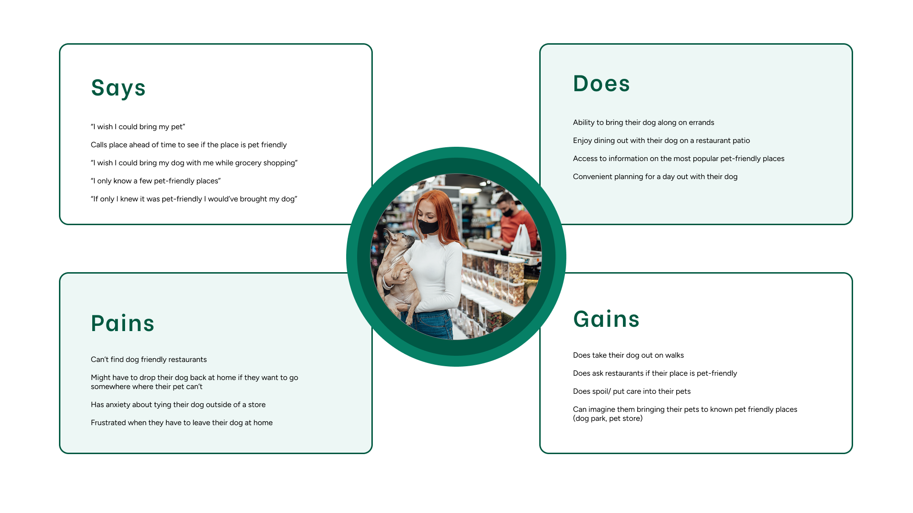
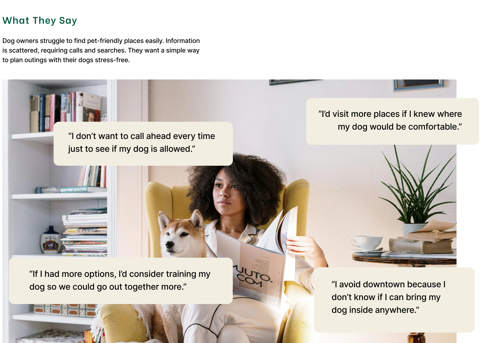
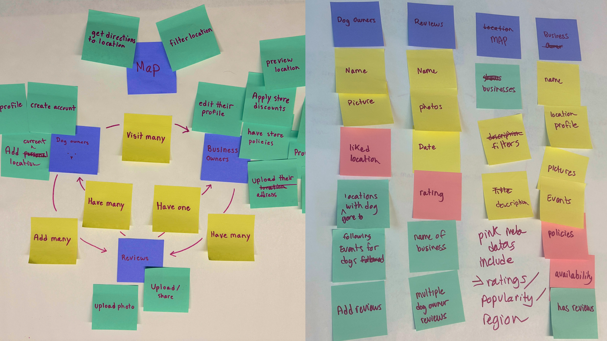
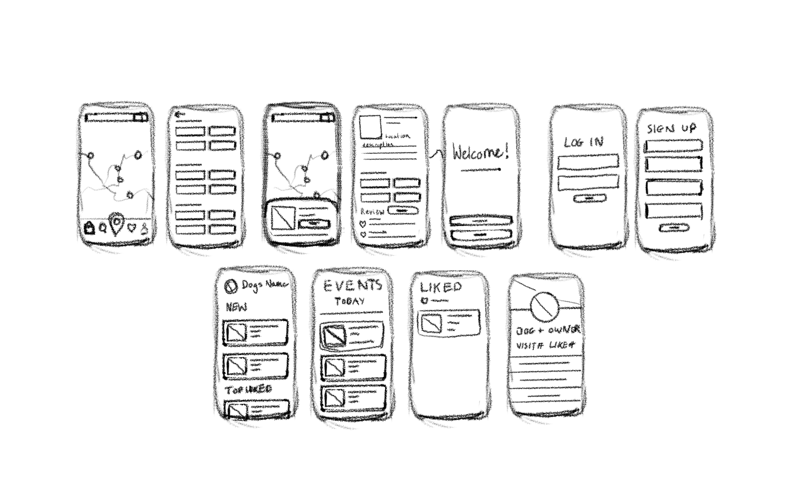
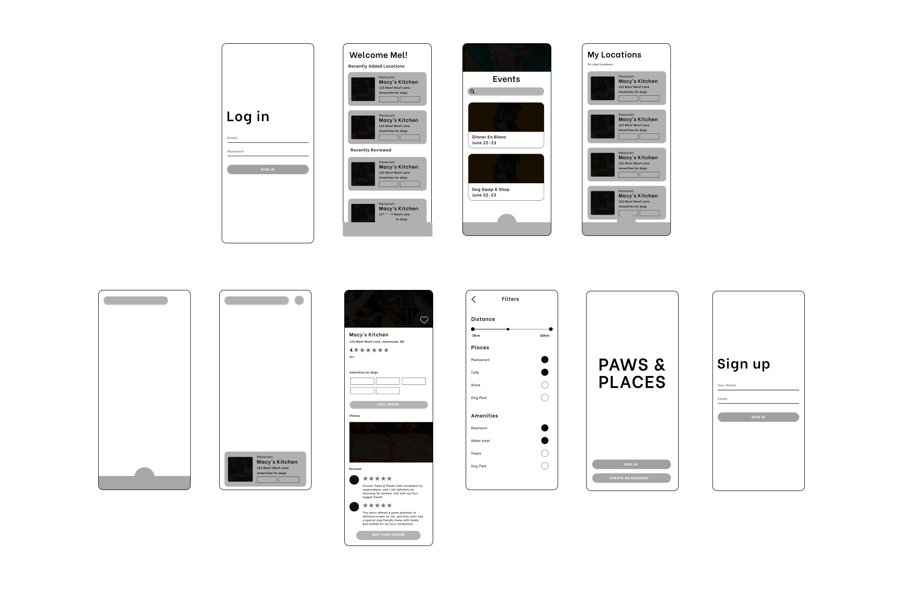
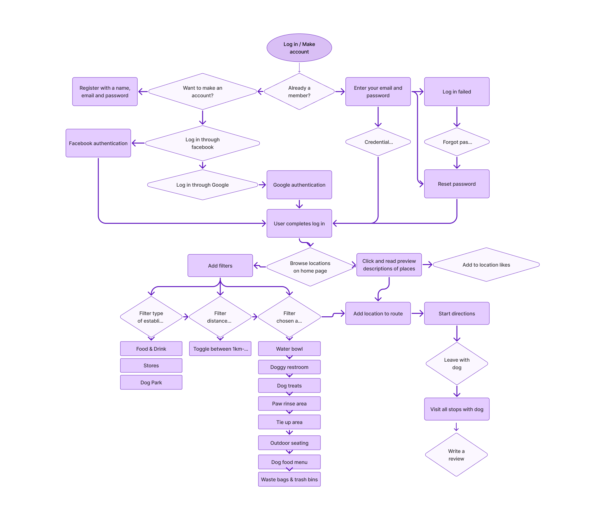

THE ISSUE
Dog owners in Vancouver often struggle to find easily accessible information about pet-friendly places to bring their furry friends. The lack of a centralized resource for this information can leave them feeling frustrated and even guilty, as they strive to include their pets in as many activities and outings as possible.
PROBLEM STATEMENT
Dog owners in Vancouver often struggle to find easily accessible information about pet-friendly places to bring their furry friends. The lack of a centralized resource for this information can leave them feeling frustrated and even guilty, as they strive to include their pets in as many activities and outings as possible.


RESEARCH
What stops dog owners from not brining their pets with them on their outings?
From my research, I found that dog owners really want to know about
places to bring their pet, but the information is often limited to
calling or looking up a specific place. A few opportunities for an app
include showing all pet-friendly places on one platform, giving people
the choice to stop at many locations with their pet.

My research led me to wonder..
After researching popular dog-friendly location apps, I found that it
is important to have a short bio of the place for users to click in
and out of, as well as having live filters on the location app to make
it easier to find multiple categories of pet-friendly places.

Sketching Solutions
Brainstorming the app through sketching low-fidelity wireframes and then refining.


Ideation

Solution